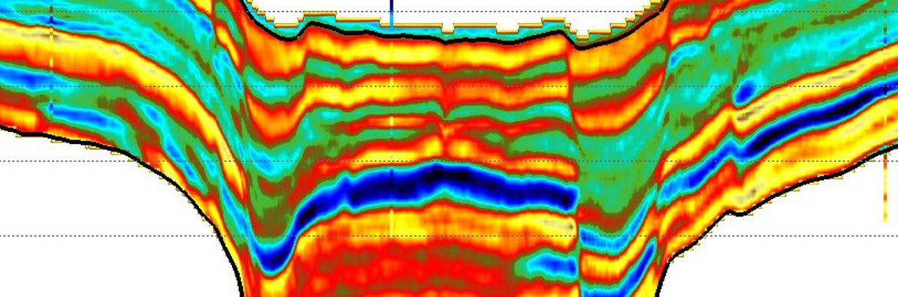
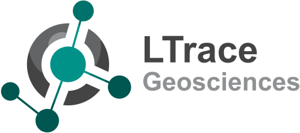
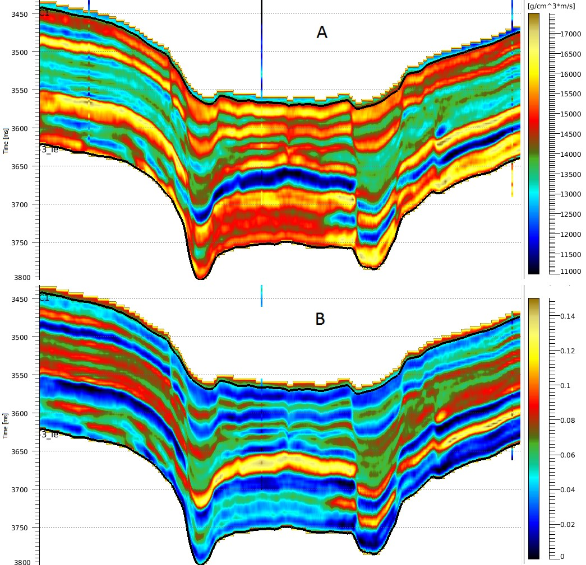

Sobre o laboratórioAbout the labSobre el laboratorio
O L3C – Laboratório de Conexionismo e Ciências Cognitivas foi oficialmente fundado em 5 de maio de 2000, no Departamento de Informática e Estatística (INE) da Universidade Federal de Santa Catarina (UFSC).
O laboratório reúne pesquisadores de Ciência da Computação que atuam em redes neurais artificiais, computação evolutiva, teoria dos jogos e lógica. Seu objetivo é estudar a emergência da cognição a partir de paradigmas inspirados na natureza, a começar pelo conexionismo, construindo pontes entre as abordagens simbólica, conexionista e evolutiva da Inteligência Artificial.
Mais do que um espaço físico de trabalho, o L3C pretende ser um grupo de pesquisadores unidos por interesses comuns, sem fronteiras físicas.
L3C – the Connectionism and Cognitive Science Lab – was officially founded on May 5, 2000, at the Department of Informatics and Statistics (INE) of the Federal University of Santa Catarina (UFSC), Brazil.
The lab brings together Computer Science researchers working on artificial neural networks, evolutionary computation, game theory and logic. Its goal is to study the emergence of cognition through nature-inspired paradigms, starting from connectionism, bridging the symbolic, connectionist and evolutionary approaches to Artificial Intelligence.
More than a physical workplace, L3C aims to be a group of researchers bound by common interests, with no physical borders.
El L3C – Laboratorio de Conexionismo y Ciencias Cognitivas – fue fundado oficialmente el 5 de mayo de 2000 en el Departamento de Informática y Estadística (INE) de la Universidad Federal de Santa Catarina (UFSC), Brasil.
El laboratorio reúne a investigadores de Ciencia de la Computación que trabajan en redes neuronales artificiales, computación evolutiva, teoría de juegos y lógica. Su objetivo es estudiar la emergencia de la cognición a partir de paradigmas inspirados en la naturaleza, comenzando por el conexionismo, y tender puentes entre los enfoques simbólico, conexionista y evolutivo de la Inteligencia Artificial.
Más que un espacio físico de trabajo, el L3C pretende ser un grupo de investigadores unidos por intereses comunes, sin fronteras físicas.
NotíciasNewsNoticias
ParceriasPartnersAlianzas

LTrace Geosciencesltrace.com.brQuer participar?Want to join?¿Quieres participar?
Estudantes interessados em iniciação científica, TCC, mestrado ou doutorado são bem-vindos. Entre em contato com qualquer um dos professores do laboratório.
Students interested in undergraduate research, an undergraduate thesis, or a Master's or Ph.D. degree are welcome. Get in touch with any of the lab's faculty members.
Los estudiantes interesados en iniciación científica, trabajo de fin de grado, maestría o doctorado son bienvenidos. Ponte en contacto con cualquiera de los profesores del laboratorio.
PesquisaResearchInvestigación
A pesquisa do L3C parte do conexionismo e da inteligência computacional e se estende à visão computacional e ao processamento de imagens, com destaque para aplicações em geociências, como a caracterização de reservatórios de petróleo e a inversão sísmica.
L3C's research starts from connectionism and computational intelligence and extends to computer vision and image processing, with a strong focus on geoscience applications such as petroleum reservoir characterization and seismic inversion.
La investigación del L3C parte del conexionismo y de la inteligencia computacional y se extiende a la visión por computadora y el procesamiento de imágenes, con especial énfasis en aplicaciones en geociencias, como la caracterización de yacimientos de petróleo y la inversión sísmica.
Linhas de pesquisaResearch linesLíneas de investigación
- Redes neurais e aprendizado de máquina: redes neurais artificiais, modelos generativos (GANs, VAEs) e redes neurais informadas pela física (PINNs).
- Geofísica computacional: inversão sísmica, estimativa de incertezas, física de rochas, modelagem de fácies e propriedades petrofísicas.
- Visão computacional e processamento de imagens: morfologia matemática, segmentação e classificação de imagens médicas, sísmicas e de sensoriamento remoto.
- IA neuro-simbólica e agentes: integração entre raciocínio simbólico e redes neurais e agentes BDI.
- Neural networks and machine learning: artificial neural networks, generative models (GANs, VAEs) and physics-informed neural networks (PINNs).
- Computational geophysics: seismic inversion, uncertainty estimation, rock physics, facies and petrophysical property modeling.
- Computer vision and image processing: mathematical morphology, segmentation and classification of medical, seismic and remote-sensing images.
- Neural-symbolic AI and agents: integrating symbolic reasoning and neural networks, BDI agents.
- Redes neuronales y aprendizaje automático: redes neuronales artificiales, modelos generativos (GANs, VAEs) y redes neuronales informadas por la física (PINNs).
- Geofísica computacional: inversión sísmica, estimación de incertidumbre, física de rocas, modelado de facies y de propiedades petrofísicas.
- Visión por computadora y procesamiento de imágenes: morfología matemática, segmentación y clasificación de imágenes médicas, sísmicas y de teledetección.
- IA neuro-simbólica y agentes: integración entre razonamiento simbólico y redes neuronales, agentes BDI.
Software
Palavras-chaveKeywordsPalabras clave
- Conexionismo
- Ciências cognitivas
- Redes neurais
- Teoria dos jogos
- Lógica
- Inversão sísmica
- Caracterização de reservatórios
- Visão computacional
- Connectionism
- Cognitive science
- Neural networks
- Game theory
- Logic
- Seismic inversion
- Reservoir characterization
- Computer vision
- Conexionismo
- Ciencias cognitivas
- Redes neuronales
- Teoría de juegos
- Lógica
- Inversión sísmica
- Caracterización de yacimientos
- Visión por computadora
ProjetosProjectsProyectos
Projeto ativoActive projectProyecto activo

Projetos anterioresPast projectsProyectos anteriores
ProfessoresFacultyProfesores
MembrosMembersMiembros
Estudantes de pós-graduação do PPGCC/UFSC vinculados ao laboratório.PPGCC/UFSC graduate students affiliated with the lab.Estudiantes de posgrado del PPGCC/UFSC vinculados al laboratorio.
| NomeNameNombre | NívelLevelNivel | OrientaçãoAdvisorDirector | TemaTopicTema |
|---|
Orientandos dos demais professores:Students advised by other faculty members:Estudiantes dirigidos por los demás profesores: a preencherto be filledpor completar
| NomeNameNombre | FunçãoRoleFunción |
|---|
Ex-membros (registro de 2019)Former members (2019 record)Exmiembros (registro de 2019)
| NomeNameNombre | Função à épocaRole at the timeFunción en ese momento | Onde está agoraWhere they are nowDónde está ahora |
|---|
| AnoYearAño | NomeNameNombre | NívelLevelNivel | OrientaçãoAdvisorDirector | TítuloTitleTítulo |
|---|
PublicaçõesPublicationsPublicaciones
Artigos e trabalhos em eventos dos professores do laboratório desde 2021. Nomes dos professores do L3C em destaque. Journal and conference papers by the lab's faculty since 2021. L3C faculty names are highlighted.Artículos y trabajos en congresos de los profesores del laboratorio desde 2021. Los nombres de los profesores del L3C aparecen destacados.
Para a produção completa, consulte o Lattes ou o ORCID de cada professor na página For complete publication lists, see each faculty member's Lattes or ORCID on thePara la producción completa, consulta el Lattes o el ORCID de cada profesor en la página de ProfessoresFaculty pageProfesores.
ContatoContactContacto
ContatoContactContacto
- CoordenaçãoCoordinatorCoordinaciónProf. Rafael de Santiago
r.santiago at ufsc.br - SalaRoomSalaINE-401 · INE/CTC, 4º andar4th floor4.º piso
- EndereçoAddressDirecciónCampus Reitor João David Ferreira Lima, Trindade, Florianópolis/SC, BrasilBrazilBrasil — CEP 88040-900
Redes sociaisSocial mediaRedes sociales
- Facebookfacebook.com/l3clab
- LinkedInlinkedin.com/company/l3clab
- Site anteriorPrevious websiteSitio anteriorl3clab.paginas.ufsc.br
InstituiçõesInstitutionsInstituciones
- Universidade (UFSC)University (UFSC)Universidad (UFSC)ufsc.br
- Departamento (INE)Department (INE)Departamento (INE)ine.ufsc.br
- Pós-Graduação (PPGCC)Graduate Program (PPGCC)Posgrado (PPGCC)ppgcc.ufsc.br